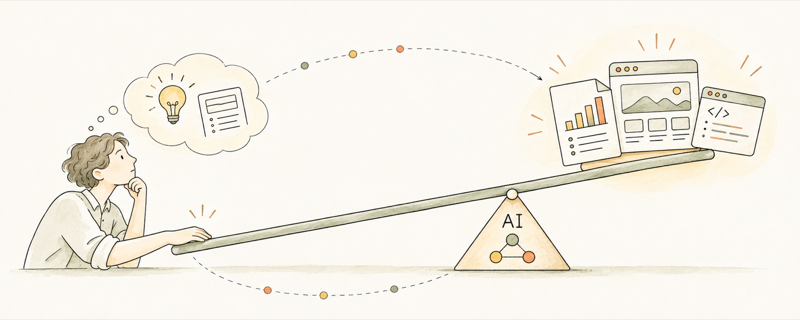

Intelligence is the ability to achieve a goal.
Better outcomes, less wasted effort. Agency means taking initiative and following through.
Give your time and attention to what matters.
Check where your attention actually goes.
Be fully present. Step back to reflect and learn.
A little distance can bring a clearer view.
AI

Models and agents as leverage for turning ideas into reality.
Biotechnology

Synthetic biology, RNA, and new possibilities for medicine.